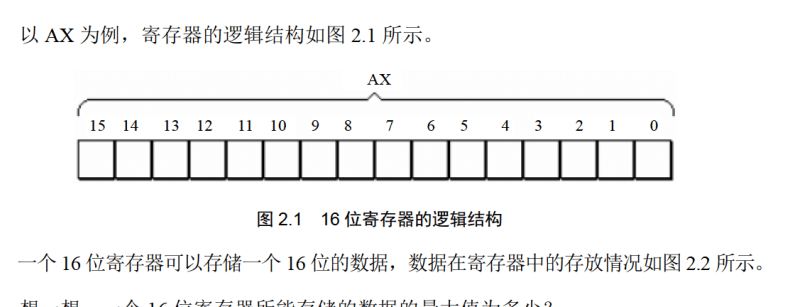
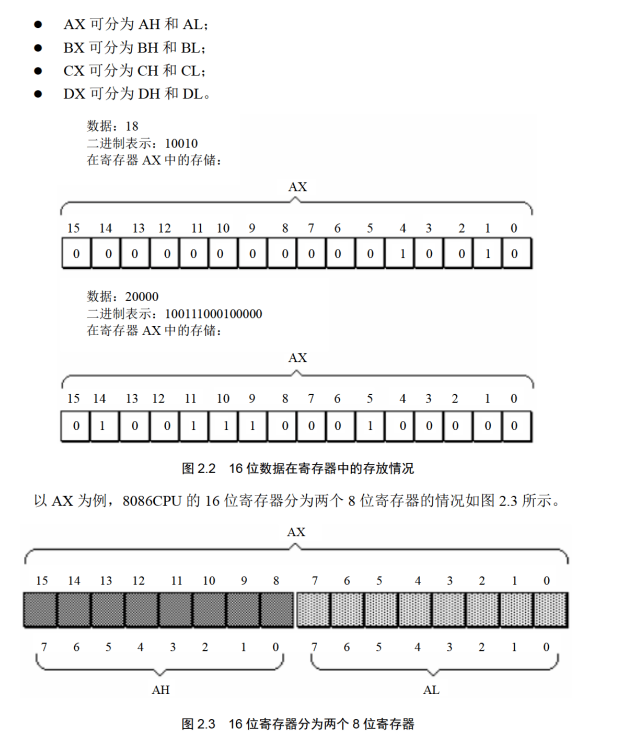
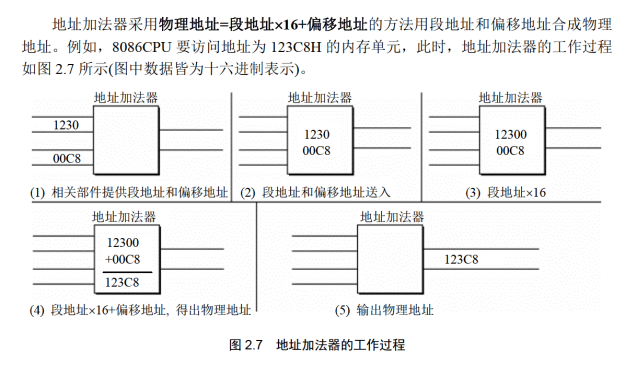
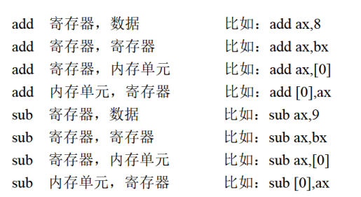
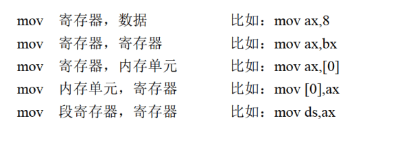

汇编语言学习
内容主要来自于王爽的《汇编语言》第四版。
8086汇编语言学习
[视频【8086汇编语言精讲】]（https://www.bilibili.com/video/BV1CJ411D7yD/?share_source=copy_web&vd_source=89fdd6c33222facf5d82736180e256cc),是B站的一个教学
配套王爽的《汇编语言》第四版。
B站编程讲解【汇编语言从0开始 重制版 自学必备(配套王爽汇编语言第三版或第四版)】
视频
从机器语言到汇编语言
机器语言，过于繁琐和难以编写。
汇编是什么？
实际上就是机器语言的助记符，给机器码起不同的有意义的名字
汇编语言的组成
- 汇编指令（核心）：机器码的助记符，有对应的机器码
- 伪指令：没有对应的机器码，计算机并不执行，由编译器执行
- 其他符号，由编译器识别，没有对应的机器码
CPU、寄存器与内存
CPU负责运算和指令执行
内存帮助CPU读取存储数据，CPU通过寻址来访问内存，进行数据读写
为了效率，寄存器充当暂存
内存之中存什么
指令和数据都有

存储单元
存储器被划分为若干个存储单元，每个存1Byte
CPU对存储器的读写
存储单元被按顺序编号，编号就是地址
CPU要从内存中读取数据，就需要地址
因此需要三种信息：
- 地址信息
- 控制信息
- 数据信息
小结
汇编指令和机器指令一一对应，每一种CPU都有自己的汇编指令集
扩展知识
大部分为计组的内容。
书

总线
需要知道地址总线、数据总线、控制总线，其宽度对应的内容。
检测点1.1
- $1KB=1024*8 bit=2^{13} bit$, 宽度为13
- 1024，0-1023
- 8192，1024
- $2^{30},2^{20},2^{10}$
- 64,1,16,4
- 1,1,2,4
- 512,256
- 二进制
其他
后面还有一些OS的知识，学过的应该不需要再看了
内容
寄存器
8086由十四个寄存器
通用寄存器
AX BX CX DX
用于存放一般性数据
都是16位的，但又分为高八位和第八位
比如AX分为AH和AL  以下的区分只要是为了向下兼容 
指令
 这里需要记住位的概念
这里需要记住位的概念
 比如上面这个例子，是怎么计算的
比如上面这个例子，是怎么计算的
然后还需要知道，AL和AH之间也不互相影响

操作对象一致性
 这里对于初学者需要特别注意
这里对于初学者需要特别注意
监测点2.1
| 题 | 答案 |
|---|---|
| mov ax,62627 | AX=F4A3H |
| mov ah,31H | AX=31A3H |
| mov al,23H | AX=3123H |
| add ax,ax | AX=6246H |
| mov bx,826CH | BX=826CH |
| mov cx,ax | CX=6246H |
| mov ax,bx | AX=826CH |
| add ax,bx | AX=04D8H |
| mov al,bh | AX=0482H |
| mov ah,bl | AX=6C82H |
| add ah,ah | AX=D882H |
| add al,6 | AX=D888H |
| add al,al | AX=D810H |
| mov ax,cx | AX=6246H |
| 2. |
mov ax,2H
add ax,ax
add ax,ax
add ax,ax
物理地址
唯一的地址是物理地址

段地址、偏移地址
都是16位，最后合成20位  段地址*16+偏移地址=物理地址
段的理解
并没有真正的段
同时，一个段最大是64KB
监测点2.2
- 10H到1000H
- 1001H 2000H
- 小于1001H或者大于2000H即可
段寄存器
CS DS SS ES
CS IP
CS是段寄存器
8086有四个段寄存器：CS DS SS ES
CS是代码段寄存器，IP为指令指针寄存器（偏移地址），组合起来是CPU要执行的指令的地址
CS:IP指向的内容当作当前指令执行
工作流程
- 从 CS:IP 指向的内存单元读取指令，读取的指令进入指令缓冲器:
- IP=IP+所读取指令的长度，从而指向下一条指令
- 执行指令。转到步骤(1)，重复这个过程。
改变值
无法使用MOV直接操作，但是可以使用JMP间接操作
JMP 段地址：偏移地址
比如jmp 2AE3:3;CS=2AE3H,IP=0003H
若想仅修改 P 的内容，可用形如“jmp 某一合法寄存器”的指令完成
监测点2.3
四次，三条指令就三次，JMP一次，四次 IP=0000H
字与字节
QWORD DWORD WORD BYTE bit
内存单元，字单元
低地址存低字节，高地址存高字节
这就是小段存储
DS:[ADDR]
mov al,[0] 其中[0]的意思就是编译地址是0处的内容。
一般形式是：寄存器:[addr]
如果没有寄存器，默认 ds:[addr]
8086CPU一次可以传送16位数据   事实上，只有内存与内存之间不能直接操作。
监测点3.1
栈
PUSH入栈
POP出栈
都是以字为单位的
比如push ax就是把ax的内容放到栈中
SS:SP
SS:SP存放了栈顶的地址
push ax
- sp=sp-2
- ax中的内容放入栈
操作内容
push pop可以操作 寄存器、段寄存器、内存单元
Stack Overflow
危险的情况，千万小心。
伪指令
伪指令没有对应的机器码，是编译器来执行伪指令
segment ends
segment和ends组合使用，用于定义一个段
格式：
段名:segment
·
·
·
段名:ends
end
end是一个汇编程序的结束标记
如果碰到了end，就结束源程序的编译
assume
含义是“假设”，假设某一段寄存器和程序中的某一个segment ends定义的段相关联。
loop
循环指令，要有标号
CX是存放判定条件的
inc、dec：自增、自减
[bx]表示bx之中存储的内容当作偏移地址